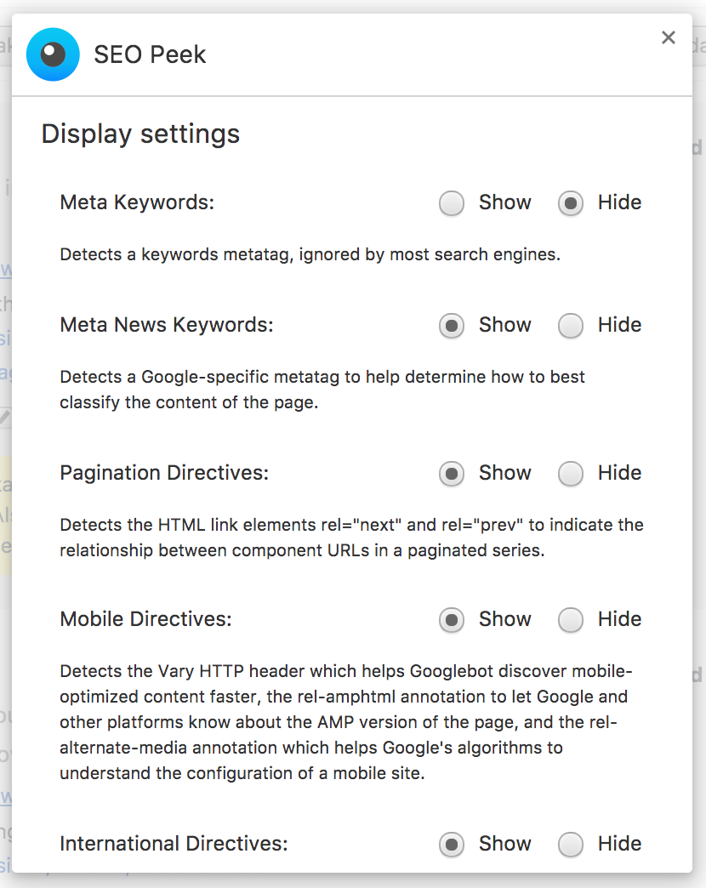

SEO Peek is a Chrome extension that checks the Document Object Model (DOM) of a page, there is no need to view the HTML source (View Source for SEO is dead) or inspect the DOM in the elements tab of Chrome DevTools.
SEO Peek checks the most relevant content elements and robot directives inside the DOM of both traditional server-side generated pages and client-side rendered pages like Single Page Applications (SPA).
Besides a check of meta tags, content and link elements the extension also sends a request to the server to check the HTTP Status and several HTTP Response Headers like the HTTP Canonical header, X-Robots-Tag header and Vary header.
The HTTP status contains an additional remark when the server supports HTTP/2. The HTTP/2 protocol does not have a status message (i.e. OK, Not Found), and only contains a status code (i.e. 200, 404).
For all link elements and link headers the extension checks if the URL of a link element or link header refers to the URL of the current page (self-referential).
The HTTP status for the canonical URL is also being checked. When the response contains a redirect the extension detects the redirect and shows the response URL and its HTTP status.
You can control the display settings of some of the elements or directives. Open the extension options in the Chrome Extensions settings.
